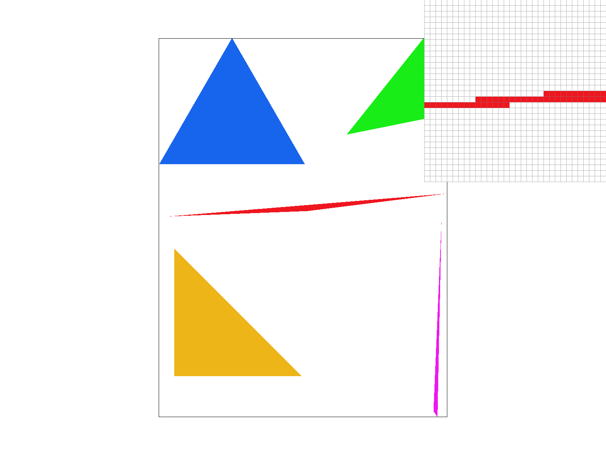
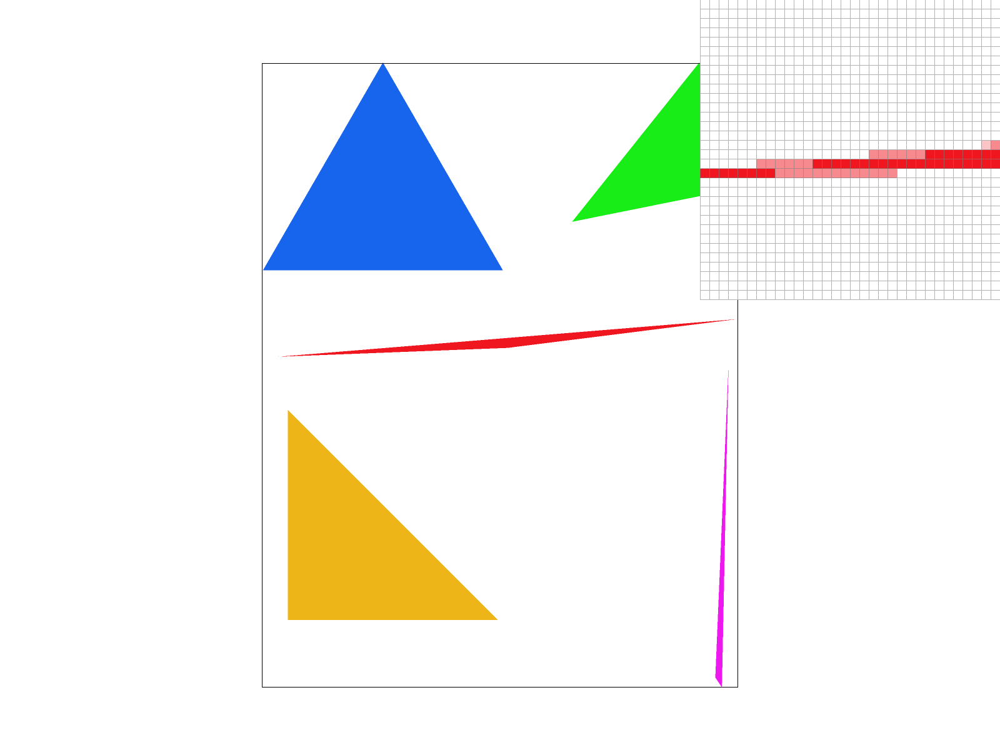
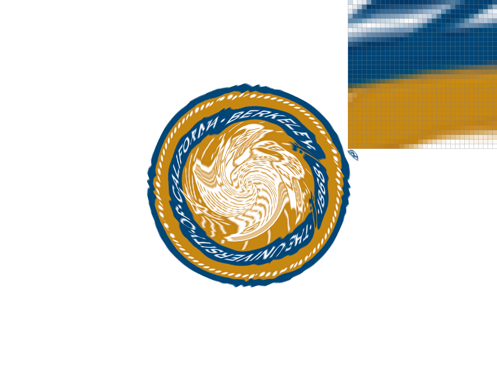
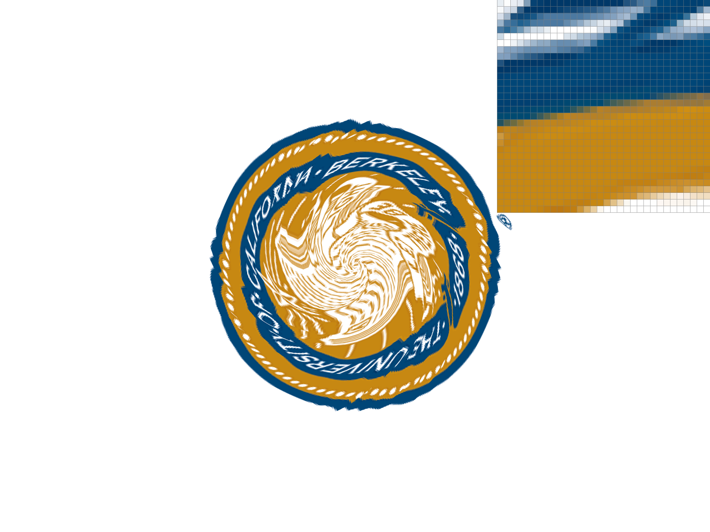
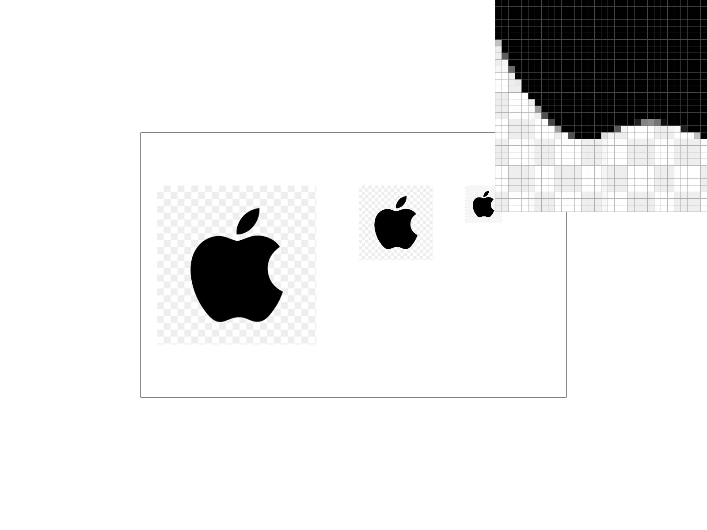

Rasterizer
Overview
I implemented triangle rasterization, supersampling, 2D transforms, barycentric color interpolation, and texture filtering with mipmaps. These pieces turn the supplied SVG scenes into an RGB framebuffer. The most useful distinction was between smoothing a triangle's boundary and filtering detail inside a texture: increasing the sample count helps both, but choosing a suitable mip level for small detail is much cheaper.
Task 1: Drawing Single-Color Triangles
For each triangle, I first find a conservative bounding box covering it by finding the minimum and maximum x and y coordinates, round outward, and clip that box to the framebuffer. For each pixel inside the box, I test the center, P=(x + 0.5, y + 0.5) by taking the cross product between (A-B) and (A-P) where A and B are vertex pairs for the triangle. Repeat this for each of the three edges (combination of vertex pairs). The point P is inside the triangle if the sign of the three cross products agree - this takes care of either vertex ordering. Zero is also included so samples exactly on an edge are filled.
The loop visits each pixel in the bounding box once and does constant work per sample. Its cost is O(B) for B pixels in that box, which is exactly the required bounding-box method. A zero-area triangle is skipped. I kept the same coverage routine for flat colors, interpolated colors, and textures to avoid slightly different edge behavior between them.

Task 2: Antialiasing by Supersampling
With only one sample, a pixel is either fully red or fully white, even if the triangle covers a small fraction of it. This creates aliasing effect when triangle edges are at a certain angle. To anti-alias, place an n * n grid of samples inside each pixel, where n = √sample_rate. Their offsets are ((i + 0.5)/n, (j + 0.5)/n). This samples the centers of equal-sized subpixel cells.
I store all samples in one vector, with each pixel's samples next to each other. Sample (i, j) in pixel (x, y) is at index (y·width + x)·sample_rate + j·n + i. The buffer therefore holds width·height·sample_rate colors. Both resizing the window and changing the sample rate reallocate this buffer.
Triangles overwrite only the samples they cover. Points and lines fill every sample of their pixel with the same color. After all primitives have been drawn, I average each pixel's samples once and convert the result to 8-bit RGB. Resolving at the end matters because later triangles may cover only some samples of an earlier triangle.

At 1 sample, the inspector shows a hard staircase. At 4 samples, partial coverage introduces a few lighter reds. At 16, there are more intermediate shades, and the thin tip is more continuous.
Task 3: Transforms
I use homogeneous coordinates so translation, scaling, and rotation all fit into 3 * 3 matrices. Translation changes the last column, scaling changes the first two diagonal entries, and rotation uses sine and cosine after converting degrees to radians.
With column vectors, T·R·S applies scale first, then rotation, then translation. Nesting the SVG groups lets a child inherit its parent's transform. For an arm, I scale the square into a segment, offset it from the joint, rotate about that joint, and then move the joint to the shoulder.
For my_robot.svg, I kept the starter robot's square-based parts and made it wave with a bent right elbow. The forearm is nested under the upper arm, so its position follows the shoulder rotation. I tilted his torso, offset his head, and bent his knees to make the pose less rigid. I made his torso, arms, and legs blue while head, hands, and feet gold to make it look like he's wearing cloths
Task 4: Barycentric Coordinates
Barycentric coordinates describe a point as a weighted combination of the triangle's three vertices where the weights sum to one. I always think of it as convex combination of the three vertices. Pixels in the triangle form the convex hull.
color(P) = α·color(A) + β·color(B) + γ·color(C)
The three weights can be calculated by dividing the signed area of the opposite subtriangle by the triangle's total signed area. The edge tests already give these area ratios, so the shading step can reuse them. I then use the weights multipled by the three vertex colors to determine the color for each pixel inside the triangle.


The triangle make the weights visible: the red-green edge has no blue contribution, while the centroid has equal contributions from all three vertices, giving (1/3, 1/3, 1/3). In the color wheel, each small triangle interpolates between the black center and two neighboring colors on the rim. The shared vertices keep the color transitions continuous across triangle boundaries.
Task 5: Pixel Sampling for Texture Mapping
To map a texture onto a pixel, I first pin three of the four corners on the texture map onto the vertices of the triangle. Then, for each pixel inside the triangle, I use the barycentric coordinates to find the corresponding point on the texture map. However, this point usually lands somewhere not at the center of a texel. This is when the sampling comes in.
N=1 nearest sampling simply rounds the computed point to the nearest texel and directly use the pixel value there. N>1 nearest sampling first subdivides a pixel into N sub pixels (similar to antialiasing). For each sub pixel, independently compute it's texel position and take the color from its nearest point in the texture map. Finally, average over all N subpixel values to get the single pixel value.
Bilinear interpolation changes how to determine the pixel color given a texel point. For each pixel or subpixel, instead of taking the value of the nearest texel, computed a weighted average of the four nearest texel values. The weight for each direction is linear to the distance of the uv coordinate to the texel center. For supersampling, repeat the same process as we did in supersampled nearest sample method, only replacing how each subpixel value is determined as above.






Nearest at 1 sample gives the gold-and-blue curves abrupt, blocky boundaries. At 16 samples, those transitions soften much more. Bilinear at 1 sample already removes much of that blockiness; going to 16 makes the edges even softer. However, there's a smaller relative difference between nearest and bilinear sampling at 16 samples per pixel. The difference is largest when a low-resolution texture is enlarged, especially around high-contrast details.
Task 6: Level Sampling with Mipmaps
When a texture map is mapped to a really small triangle, the above sampling methods might not work well because only moving one texel can correspond to very little movement in pixel space. In other words, the sampling region in texel space for one pixel might be very disjoint from the sampling region for the pixel beside it. This means jagged artifacts will remain.
A mipmap stores successively smaller, prefiltered copies of the texture. Level sampling chooses a copy whose texels are approximately the size of the texture region covered by a screen pixel. This avoids selecting one tiny detail from a region that should have been averaged.
I interpolate UV at the current sample and at offsets of one screen pixel in x and y. Because barycentric
interpolation is affine here, I calculate those two UV differences once per triangle, then add them to
each sample's UV. In get_level, I scale the u differences by the original texture width and
the v differences by its height.
D = max(‖dx‖, ‖dy‖), level = log₂(max(1, D))
I clamp the level to the available mip range. L_ZERO always uses level 0.
L_NEAREST rounds the level. L_LINEAR samples its floor and ceiling levels and
blends by the fractional part. Each level can independently use nearest or bilinear pixel sampling;
bilinear within levels plus linear blending between levels gives trilinear filtering. The derivatives
stay one pixel apart even when supersampling is enabled.
Cost and quality
| Method | Compute and memory | Benefits |
|---|---|---|
| Nearest → bilinear pixels | 1 → 4 texel reads per level; no extra image storage. | Smooths interpolation within a level, especially during magnification. Does not integrate a large minification footprint. |
| Use mip levels | A square power-of-two mip chain needs about 4/3 the base texture storage. Nearest level reads one level; linear level blending reads two. | Prefilters texture detail during minification. Linear level blending avoids abrupt changes between levels. Does not antialias the triangle silhouette. |
| Increase samples/pixel | Sample-buffer storage and shading work grow roughly with the sample count. 16 samples use 16 times the color-sample storage. | Improves geometric coverage and samples texture detail more densely, but costs much more and can still miss very high frequencies. |
The supplied mip generator allocated the full chain but stopped filling it too early. I fixed the loop to include every allocated level; otherwise sufficiently distant textures could sample unfilled black levels. Tests with white textures, odd dimensions, and 1 * N images check that the chain reaches a valid 1 * 1 result.
Task 6: Sampling Comparisons
I used a 348 * 348 Apple-logo PNG with a black silhouette on a light checkerboard. mipmap.svg maps the full texture onto three squares at different sizes, using one sample per pixel. In the smallest copy, one screen pixel covers roughly four source texels in each direction, so nearest-level sampling selects mip level 2.





The inspector shows the same lower edge of the smallest logo in all four images. With level 0 and nearest pixels, the outline has abrupt stair steps and the checkerboard stays sharply divided. Bilinear sampling at level 0 introduces a few gray transition pixels, but its four-texel neighborhood is still smaller than the pixel footprint. Nearest mip sampling produces more averaged edge values and softens the checkerboard. Combining the nearest mip level with bilinear pixels gives the smoothest outline here, with a wider gray transition along the black edge.